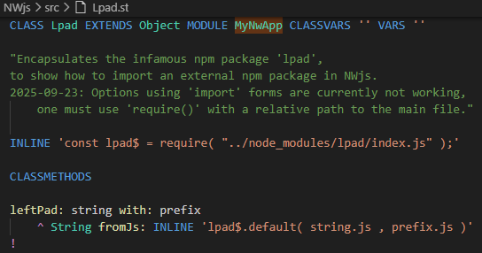
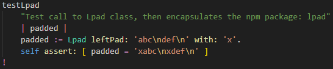

Unfortunately, NW.js currently does not fully support ESM import functionality.
Using a new npm module, requires a different way of importing it.
The example app shows how to do it by importing the infamous module lpad ,
that only has one function lpad that inserts a string before every line in another string.
Open the file
src/Lpad.st that looks like this:

To be able to use the npm module
lpad ,
it was installed earlier with the shell command:
npm install lpad .
Here we create a new ST class
Lpad in our app.
The
INLINE statment imports the JS module
lpad using
require( ... ) ,
also creating a module variable
lpad$ to reference it.
The method
leftPad: string with: prefix calls the JS function
lpad ,
using the regular SmallJS
INLINE keyword.
The method
testLpad in the app class tests if it works:

Jay...
Cheers
This concludes the tutorial section on NW.js.
To make your own NW.js app, start by making a copy of this example app.